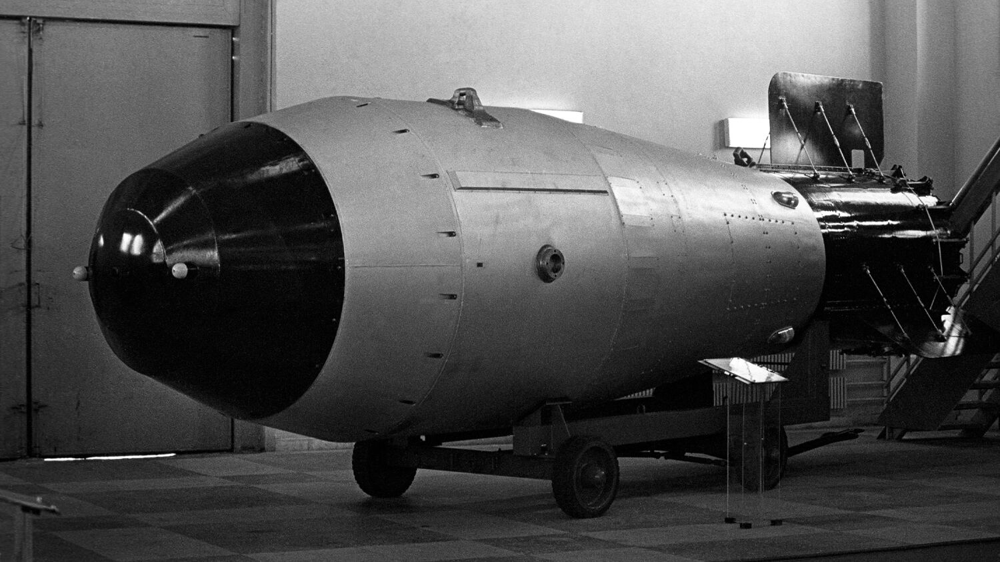

- Bomba atomică – SUA au utilizat primele arme nucleare la Hiroshima și Nagasaki (1945). URSS a obținut propria bombă atomică în 1949, declanșând o cursă a înarmării fără precedent. Ulterior au apărut bombele cu hidrogen, mult mai puternice.
- Doctrina MAD (Mutually Assured Destruction) – „Distrugerea reciprocă asigurată" a fost principiul care a împiedicat un război deschis: orice atac nuclear ar fi fost urmat de o ripostă devastatoare, ducând la anihilarea ambelor părți.
- Cursa spațială – URSS a lansat primul satelit artificial, Sputnik 1, în 1957, și l-a trimis pe Iuri Gagarin în spațiu în 1961. SUA au răspuns prin programul Apollo: în 1969, Neil Armstrong a devenit primul om care a pășit pe Lună.
- NATO și Tratatul de la Varșovia – În 1949 s-a format NATO, alianța militară a Occidentului. URSS a răspuns în 1955 cu Tratatul de la Varșovia, care unea statele comuniste din Est. Cele două blocuri au menținut un echilibru fragil al forțelor.
- Tratate de limitare – Tratatele SALT I (1972), SALT II (1979) și INF (1987) au încercat să limiteze numărul armelor nucleare. „Inițiativa de Apărare Strategică" a lui Reagan („Războiul stelelor") a forțat URSS la cheltuieli militare insuportabile.
